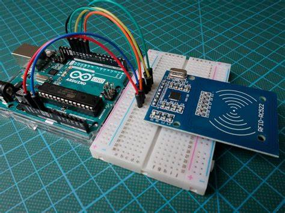
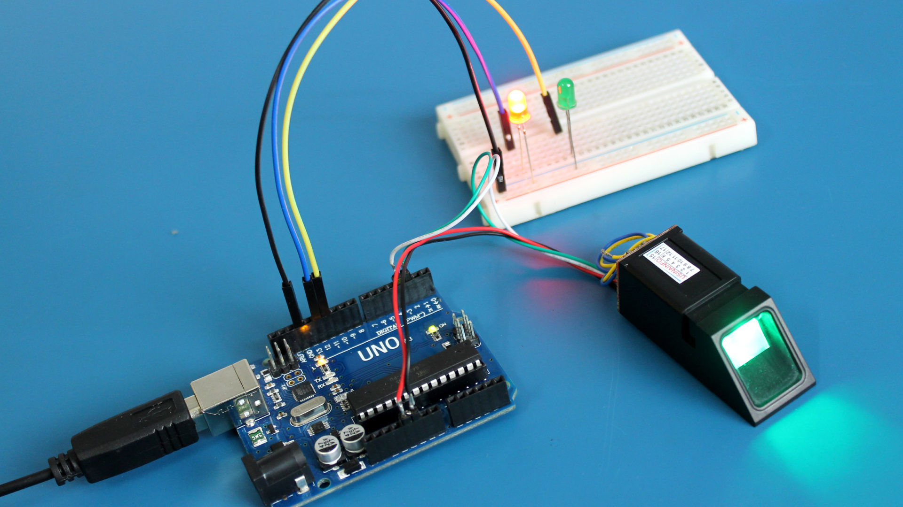

Sensores RFID
Os sensores RFID são dispositivos usados para identificar e rastrear automaticamente objetos e pessoas usando sinais de rádio. No sistema de segurança, eles permitem a identificação rápida e segura de usuários autorizados.
Reconhecimento Facial
O sistema de segurança também integra o reconhecimento facial, permitindo que o acesso seja liberado apenas para usuários cuja face está cadastrada no sistema. Essa tecnologia oferece uma camada adicional de segurança, evitando fraudes e melhorando a experiência do usuário.
Com o uso de algoritmos avançados, o sistema analisa os pontos faciais para identificar o indivíduo e garantir que o acesso seja permitido apenas para pessoas autorizadas.
Leitores Biométricos
Os leitores biométricos são sensores que capturam características físicas, como impressões digitais, para conceder acesso seguro e personalizado a áreas restritas.
Código Arduino
Leitura de RFID
O código de leitura RFID no Arduino utiliza a biblioteca MFRC522 para identificar as tags RFID. Quando a tag é lida, o Arduino compara o número único da tag com a lista de usuários autorizados.
 1.png)
Controle de Acesso com Reconhecimento Facial
O sistema de reconhecimento facial, ao identificar uma correspondência, envia um comando para um relé que controla a abertura da porta. Se o rosto não for reconhecido, um alerta pode ser disparado, garantindo maior segurança.
 1.png)
Biometria (Leitor de Impressão Digital)
Para o módulo de impressão digital, o Arduino utiliza a biblioteca Adafruit Fingerprint, que verifica a digital armazenada e envia um comando para liberar o acesso caso haja uma correspondência.
 1.png)
Conclusão
Somos o grupo SSM "Sistema de Segurança e Monitoramento", uma turma de Desenvolvimento de Sistemas 3 "DSI3". O sistema de segurança e monitoramento desenvolvido para este TCC integra as tecnologias RFID, reconhecimento facial, biometria e Arduino, proporcionando um controle de acesso eficaz e seguro.